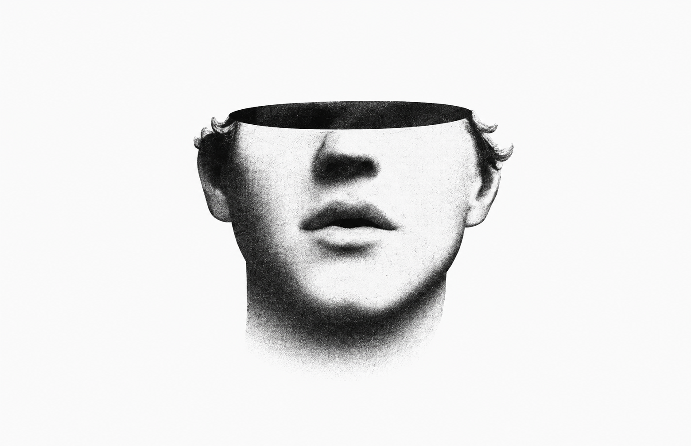

✥▤M◈✣◉●Ideas are better
together.
A little space for the connections between your notes, tools and ideas. This interactive design study recreates the reference composition and imagines the story beyond the screenshot.
A concept study for a more connected way of thinking.
A fresh perspective, made for curious minds.